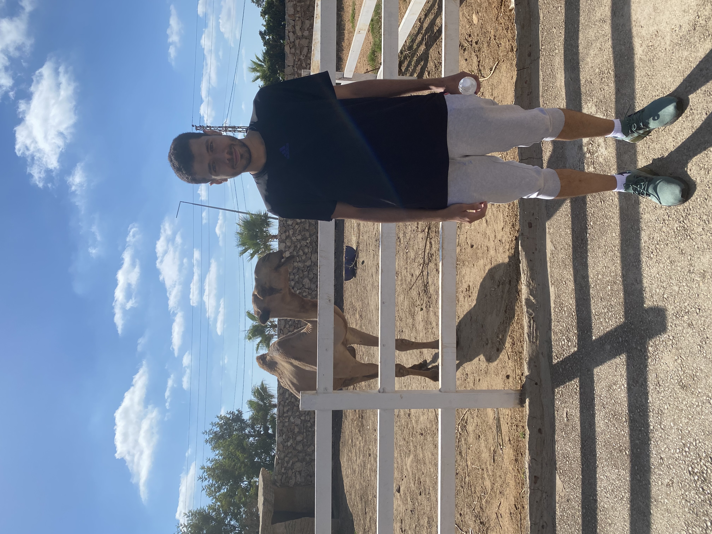

Camels are large and typically domesticated animals that can be primarily found in Africa and Asia. Their most notable feature is the hump, which is a large bump on their back that stores fat. Camels are especially useful as a means of transport in hotter environments due to their ability to withstand heat for long periods of time. Camels are also used by humans as a source of food and milk. There are a few different types of camels, with the dromedary camel being the most common one found. These camels are known for having only one hump. Camels are reported to have been used by humans for thousands of years, and they continue to play an important role in many societies today.
